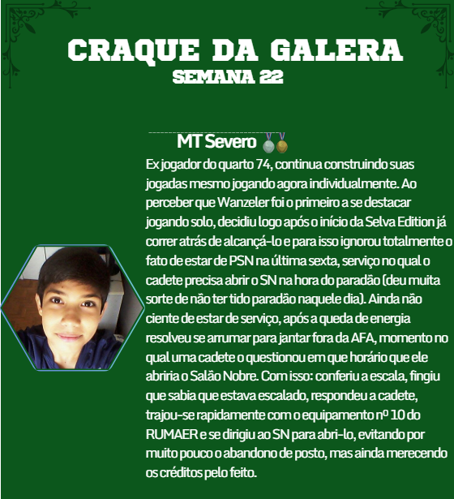
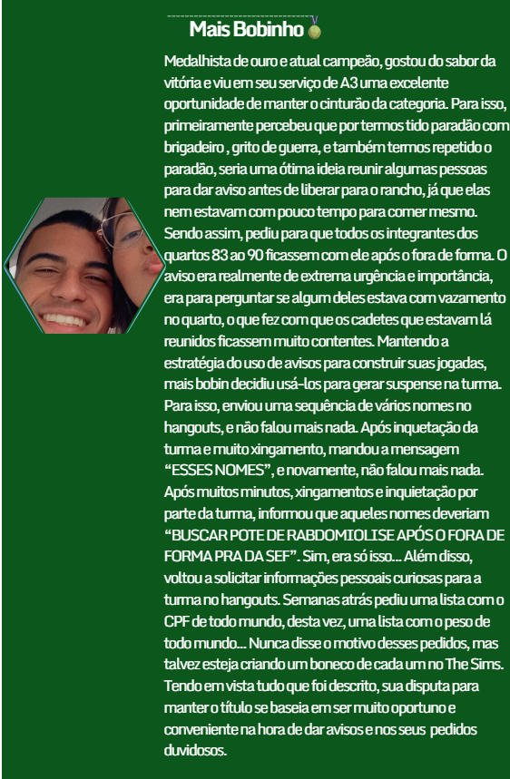
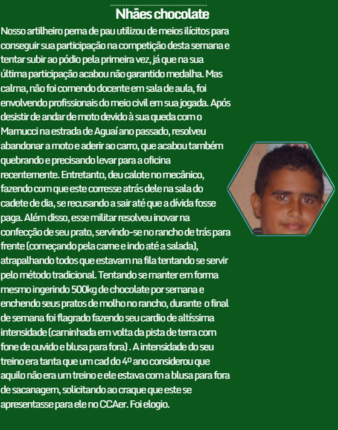

A series
Grupamentos Que valem ouro
SEMANA 22
Vocês acharam que não ia ter craque da galera hoje? Não é porque a semana foi curta e que tem 3 provas e 60% do TCC para fazer semana que vem que a equipe vai deixar de trabalhar, e muito menos os jogadores de jogar. Portanto, chegamos à semana 22 e como de costume o craque será eleito. Graças ao feriado de Corpus Christi a semana teve apenas 3 dias úteis, o que não nos impediu de sermos presenteados com performances sensacionais dos nossos concorrentes. Tivemos grandes atuações em serviços, como a do MT Severo e do Mais Bobin (atual campeão). Tivemos grandes atuações na DE, como da Ano Valério e do Mano Dom. E tivemos jogadores que usaram mais de um setor do campo (ou fora do campo) para a construção das jogadas, como o Nhães Chocolate. O que será mais valorizado? Qual vai ser o critério adotado pela turma? É claro que esta edição não alcançou o nível da Selva Edition e me arrisco a dizer que nenhuma nunca alcançará. Mas, EAÍ ÁRTEMIS, QUEM É O CRAQUE DA SEMANA 22?



